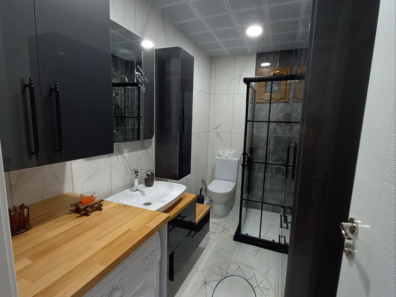

Sarıyer Villa Peyzaj
Süre: 2 Hafta | Kapsam: Çim döşeme, aydınlatma, peyzaj , | Lokasyon: İstanbul/Sarıyer
Öncesi

Proje Amacı
Müşterinin İstekleri:Mevcut durum, düzensiz toprak ve bakımsız çim alanlarından oluşuyordu; bu durum, oturma alanı veya net bir yürüme yolu sunmuyordu. Müşteri, evin girişini netleştiren ve bahçenin tüm yıl boyunca kullanılmasına olanak tanıyan temiz, işlevsel bir dolaşım yolu istiyordu.Bahçe, düzenli çitler, net sınırlar ve modern bir aydınlatma sistemine sahip olmadığı için düzensiz ve yetersiz görünüyordu. Müşteri, mülke değer katacak çağdaş ve bakımlı bir dış mekân estetiği talep etti.Mülkün çevresinde belirgin bir sınırlandırma veya peyzaj elemanı (duvar, çit) bulunmuyordu. Müşteri, mülk sınırlarını netleştiren ve görsel düzeni sağlayan unsurlar talep etti.
Uygulanan Çözümler ve Sonuç
Çözüm Yöntemi:Bahçenin merkezine, evin girişini vurgulayan ve alanın kullanımını maksimize eden geniş, modern, koyu renkli taş (fayans) yürüme yolu (sert zemin) oluşturuldu.Yürüme yolunun her iki yanına, görsel dengeyi sağlayan ve farklı peyzaj alanlarını ayıran net, keskin hatlı bordürler inşa edildi. Yürüme yolunun her iki tarafına, alana gece estetiği ve güvenliği katan, modern tasarımlı, alçak bahçe aydınlatmaları yerleştirildi. Bahçe sınırları boyunca, beyaz, minimalist dekoratif çit duvarları örülerek mülkün sınırları netleştirildi ve düzenli bir fon oluşturuldu. Düzensiz çim alanları, yüksek kaliteli, bakımlı ve canlı rulo çim ile kaplandı.Yol boyunca simetrik olarak yerleştirilmiş yüksek, dekoratif ağaçlar ve renkli güller gibi bitkilerle bahçeye derinlik ve canlılık katıldı.
Sonrası
